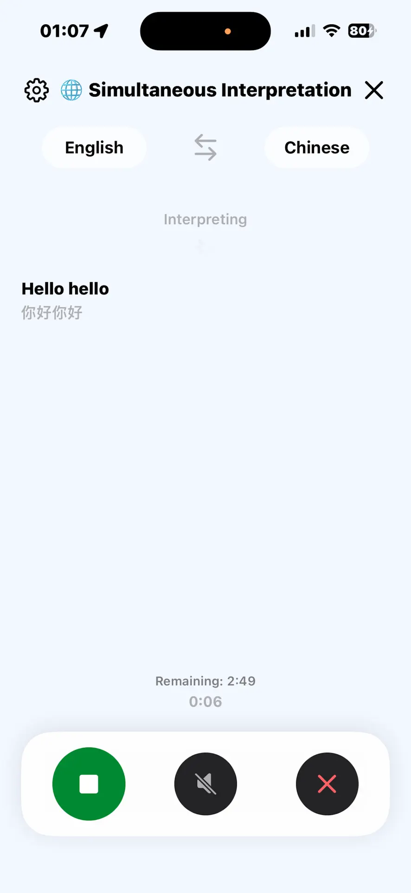
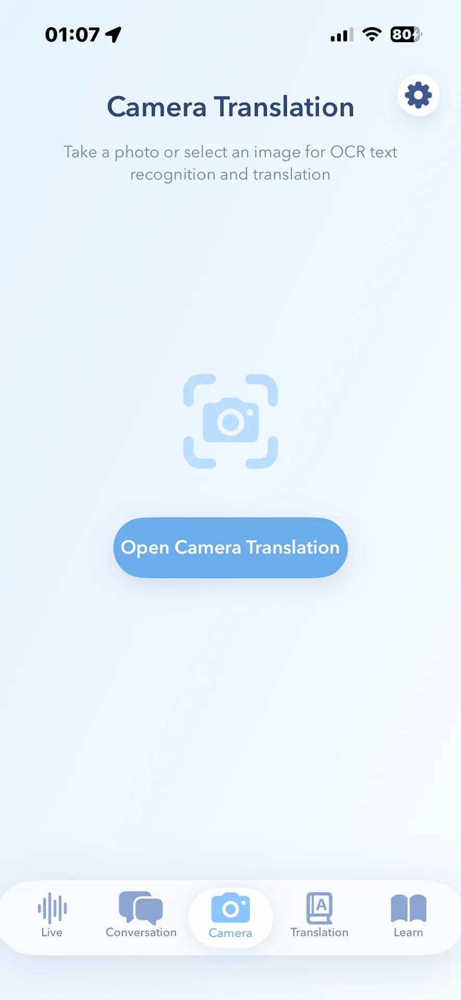

Travel translator comparison
3 best travel translator apps for iPhone, compared.
Apple for integration, Google for language breadth, or Translation Specialist for live voice, camera translation, and offline travel.


Quick answer
Choose Apple for integration, Google for breadth, or Translation Specialist for a focused travel workflow.
Apple Translate is already integrated with iPhone and covers text, voice, conversations, camera translation, and downloaded languages. Google Translate has the broadest published text-language coverage of these three and adds handwriting, transcription, camera, conversation, and offline modes, although not every feature supports every language.
Translation Specialist is narrower and travel-specific. Its current listing combines two-way voice conversation, continuous live interpretation, camera and text translation, core offline pairs, and 1,000 travel phrase flashcards. It is free to download with optional in-app purchases.
Apple Translate, especially when you prefer an integrated iPhone workflow and downloaded on-device languages.
Google Translate, whose current listing advertises text translation across up to 249 languages; modes vary by language.
Translation Specialist, when continuous live interpretation and travel phrase practice belong in the same app.
Method and disclosure
This comparison uses current first-party documentation.
We checked Apple Support, Google Translate Help, and the current US App Store listings on . We did not invent universal accuracy scores: translation quality changes by language pair, accent, background noise, text clarity, and context.
Disclosure: CrazyAIAgent publishes Translation Specialist. We receive no affiliate payment for the Apple or Google links. The page names their strengths and our app's requirements so you can choose by trip, not by a manufactured overall rank.
Feature comparison
Apple Translate vs Google Translate vs Translation Specialist.
Use the rows as a packing checklist. Confirm your exact language pair before relying on any offline or live mode abroad.
Choose by trip
The destination matters more than the feature count.
Start with the language pair and the situation. A city-break traveler reading menus needs reliable camera recognition. A family visit needs quick two-way speech. A tour, conference, or long explanation makes continuous interpretation more important. A remote route makes tested offline packs non-negotiable.
Do not choose from the headline language count alone. Google publishes the broadest figure, but feature support varies by language. Apple integrates tightly with iPhone, but some newer live features have device, region, and language requirements. Translation Specialist combines focused travel modes, but supports a smaller published live-interpretation set and requires a large initial download.
Test Apple Translate first because it is already integrated. Add another app only when the workflow or language coverage is missing.
Check Google Translate's live feature list, not just text support. Camera, speech, offline, and transcription availability can differ.
Compare Google Transcribe with Translation Specialist's continuous live interpretation using your actual accent and target language.
Offline checklist
Download, test, and keep a fallback before departure.
“Works offline” is not a promise that every language, camera mode, or speech feature works without a connection. Download both sides of the language pair while on Wi-Fi, enable the relevant offline setting, switch the phone to Airplane Mode, and test the phrases and signs you expect to use.
Keep your hotel address, allergies, emergency contact, and return route as screenshots or notes in both languages.
Permissions should be granted before you are standing at a border desk, ticket machine, or dark restaurant.
Names, times, prices, medication, allergens, legal terms, and emergency instructions deserve a second source or human interpreter.
Privacy check
Offline processing and App Store labels answer different questions.
An offline mode describes where a particular translation can run. An App Store privacy label describes data categories the developer says may be collected across the app. Read both. Apple's support explains on-device modes; Google's current label lists several linked data categories; Translation Specialist's current label says Data Not Collected. Apple notes that these labels are developer-provided.
Avoid pasting passports, medical records, legal contracts, or full private conversations unless the use is necessary and the policy is acceptable.
Camera, microphone, speech recognition, photos, and network access serve different features. Grant only what you plan to use.
Versions, privacy labels, language packs, prices, and device requirements change. Use the live official pages linked above.
FAQ
Travel translator questions answered.
What is the best travel translator app for iPhone?
There is no universal winner. Apple Translate is the simplest built-in choice, Google Translate is strongest for broad language and input coverage, and Translation Specialist is a focused option for travelers who want two-way voice conversation, continuous live interpretation, camera translation, and phrase flashcards in one app.
Which iPhone translator apps work offline?
All three provide some offline capability, but support varies by language and feature. Apple requires both input and output languages to be downloaded, Google offers downloadable offline language packs, and Translation Specialist advertises offline support for core language pairs. Download and test the exact pair before departure.
Is Apple Translate or Google Translate better for travel?
Apple Translate is a strong fit when system integration, a built-in app, and on-device mode matter. Google Translate is a stronger fit when you need much broader text-language coverage, handwriting, transcription, or a language pair Apple does not support. Feature availability still varies by language.
Can these apps translate menus and signs with the camera?
Yes. Apple Translate, Google Translate, and Translation Specialist all document camera or photo translation. Clear lighting, readable text, and a supported language pair improve results; names, prices, allergens, and safety instructions should still be checked carefully.
Does Translation Specialist collect personal data?
Its current App Store privacy label says Data Not Collected. Apple notes that privacy labels are supplied by developers and can vary with features or account use, so check the live listing before installing.
Should I rely on a translator app for medical or legal communication?
No translator app should be the sole authority for critical medical, legal, immigration, emergency, or safety information. Use it to assist everyday communication, then confirm consequential details with a qualified human interpreter.